[’ax-ḍar] ; vert, e

En langue arabe, le mot أخضر (akhḍar) dépasse la simple description d'une couleur pour devenir un véritable symbole de vie. Sa racine (kh-ḍ-r) renvoie directement à la fraîcheur et à la fertilité, faisant du vert l'emblème de l'abondance et du paradis. Cette origine explique sa richesse sémantique : il désigne autant la couleur que la vitalité de la croissance végétale. Cette idée est d'ailleurs illustrée par l'expression « الشجر الأخضر أصل الطاقة ومصدر الحياة » (Les arbres verts sont l'origine de l'énergie et la source de la vie).
À partir de cette relation à la nature, le vert prend en arabe des valeurs spirituelles et sociales profondes. Couleur emblématique de la civilisation arabo-musulmane, il symbolise la paix, la dignité et la bienveillance. Dans les textes sacrés analysés, il qualifie les parures du paradis : « ثِيَابًا خُضْرًا مِّن سُندُسٍ » (Des vêtements verts de soie fine). Par extension métaphorique, il qualifie ce qui est porteur d'espoir ou de chance. Ces usages montrent que la polysémie de akhḍar repose sur un mélange de perceptions naturelles et de conventions culturelles fortes, comme l'illustre la poésie avec « على منديلك الأخضر » (Sur ton mouchoir vert), symbole de tendresse et de souvenir.
Enfin, dans le contexte contemporain, le mot acquiert une dimension idéologique liée à l'écologie mondiale. Tout comme en français, le terme est désormais associé aux valeurs du développement durable et de la protection de l'environnement. Il est ainsi évoqué dans un des sites « الاقتصاد الأخضر والاستدامة » (L'économie verte et la durabilité), montrant que le mot sert aujourd'hui à désigner des systèmes non polluants. On observe ainsi que la polysémie de akhḍar s'organise autour d'un noyau sémantique lié à la vie, enrichi par des extensions religieuses, politiques et environnementales .